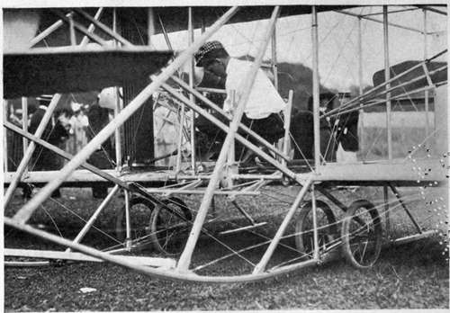

Chapter IV. Starting And Alighting
Description
This section is from the book "The New Art Of Flying", by Waldemar Kaempffert. Also available from Amazon: The New Art of Flying.
Chapter IV. Starting And Alighting
In a previous chapter it has been pointed out that like every soaring bird an aeroplane must be in motion before it can fly. Even the early dreamers appreciated the fact. How that preliminary leap into the air is to be effected gave Langley no little concern. With the motorless gliders of Lilienthal, Pilcher, and Chanute, it was no difficult matter for the aeronaut to launch himself into the air. He simply carried his apparatus to the top of a hill, grasped the handle-bar, ran down the hill at top speed for a short distance, and then drew up his legs, like any bird. Thus he would slide down the air for several hundred feet as if upon an invisible track.
When Langley succeeded in building a small, motor-driven model of a flying-machine, the problem of launching his contrivance long baffled him. Eventually he invented a launching device, which has served as a pattern for later inventors. The difficulties which beset him were eloquently and lucidly described in an article from his pen, published in McClure's Magazine for June, 1897. The whole problem is there so well and so simply presented that we cannot do better than to let Mr. Langley set it forth himself, even though launching a flying-machine is now regarded as a simple matter:
" In the course of my experiments I had found out . . . that the machine must begin to fly in the face of the wind and just in the opposite way to a ship, which begins its voyage with the wind behind it.
" If the reader has ever noticed a soaring bird get upon the wing he will see that it does so with the breeze against it, and thus whenever the aerodrome 1 is cast into the air it must face a wind which may happen to blow from the north, south, east or west, and we had better not make the launching station a place like the bank of a river, where it can go only one way. It was necessary, then, to send it from something which could be turned in any direction, and taking this need in connection with the desirability that at first the airship should light in the water, there came at last the idea (which seems obvious enough when it is stated) of getting some kind of a barge or boat and building a small structure upon it which could house the aerodrome when not in use, and from whose flat roof it could be launched in any direction. Means for this were limited, but a little " scow" was procured, and on it was built a primitive sort of house, one story high, and on the house a platform about ten feet higher, so that the top of the platform was about twenty feet from the water, and this was to be the place of the launch. This boat it was found necessary to take down the river as much as thirty miles from Washington, where I then was — since no suitable place could be found nearer — to an island having a stretch of quiet water between it and the main shore; and here the first experiments in attempted flight developed difficulties of a new kind — difficulties which were partly anticipated, but which nobody would probably have conjectured would be of their actually formidable character, which was such as for a long time to prevent any trial being made at all. They arose partly out of the fact that even such a flying-machine as a soaring bird has to get up an artificial speed before it is on the wing. Some soaring birds do this by an initial run upon the ground, and even under the most urgent pressure cannot fly without it.
1 Langley's term for an aeroplane flying-machine, signifying " air-runner".
Fig. 14. Combined wheels and skids employed on the later Wright machines.
Photograph by Edwin Levick.
" To get up this preliminary speed many plans were proposed, one of which was to put the aerodrome on the deck of a steamboat, and go faster and faster until the head-wind lifted it off the deck. This sounds reasonable, but it is absolutely impracticable, for when the aerodrome is set up anywhere in the open air, we find that the very slightest wind will turn it over, unless it is firmly held. The whole must be in motion, but in motion from something to which it is held until that critical instant when it is set free as it springs into the air.
" The house boat was fitted with an apparatus for launching the aerodrome with a certain initial velocity, and was (in 1893) taken down the river and moored in the stretch of quiet water I have mentioned; and it was here that the first trials at launching were made, under the difficulties to which I have alluded.
" It is a difficult thing to launch a ship, although gravity keeps it down upon the ways, but the problem here is that of launching a kind of ship which is as ready to go up into the air like a balloon as to go off sideways, and readier to do either than to go straight forward, as it is wanted to do, for though there is no gas in the flying-machine, its great extent of wing surface renders it something like an albatross on a ship's deck — the most unmanageable and helpless of creatures until it is in its proper element.
" If there were an absolute calm, which never really happens, it would still be impracticable to launch it as a ship is launched, because the wind made by running it along would get under the wings and turn it over. But there is always more or less wind, and even the gentlest breeze was afterward found to make the airship unmanageable unless it was absolutely clamped down to whatever served to launch it, and when it was thus firmly clamped, as it must be at several distinct points, it was necessary that it should be released simultaneously at all these at the one critical instant that it was leaping into the air. This is another difficult condition, but that it is an indispensable one may be inferred from what has been said. In the first form of launching piece this initial velocity was sought to be attained by a spring, which threw forward the supporting frame on which the aerodrome rested; but at this time the extreme susceptibility of the whole construction to injury from the wind and the need of protecting it from even the gentlest breeze had not been appreciated by experience. On November 18, 1893, the aerodrome had been taken down the river, and the whole day was spent in waiting for a calm, as the machine could not be held in position for launching for two seconds in the lightest breeze. The party returned to Washington and came down again on the 20th, and although it seemed that there was scarcely any movement in the air, what little remained was enough to make it impossible to maintain the aerodrome in position. It was let go, notwithstanding, and a portion struck against the edge of the launching piece, and all fell into the water before it had an opportunity to fly.
Continue to: